LOUIS RENNER
Das Herzstück des Klaviers: 140 Jahre Tradition, die neue Fertigung in Meuselwitz & die hohe Kunst des Hammerkopfs
The Heart of the Piano: 140 Years of Tradition, Modern Manufacturing in Meuselwitz & The Art of Hammerhead Engineering
ピアノの心臓部：140年の伝統、モイゼルヴィッツ新拠点、そして至高のハンマーヘッド製造技術
钢琴的心脏：雷诺140年极致工艺传承、莫伊瑟尔维茨新总部启航与弦槌声学生产大师课
Die 6 Kernmodule der Renner Masterclass
140+ Jahre Tradition & Perfektion (1882 – Heute)

Zusammenlegung & Ausbau zum globalen Hauptsitz

Baudokumentation: Die Entstehung des neuen Werks
- Phase 1: Entkernung, Bodensanierung und Hallenisolierung
- Phase 2: Installation modernster Klimatechnik und Absauganlagen
- Phase 3: Umzug der Spezialmaschinen und Präzisionspressen
- Phase 4: Aufbau der robotergestützten Zuschnittlinien
- Phase 5: Inbetriebnahme des klimatisierten Filz- und Baugruppenlagers


Klimakontrolle & Präzisionslogistik

J.D. Weickert & Die Wiege des Hammerkopffilzes
- Gründung 1783: Gegründet von Johann David Weickert in Leipzig (Sachsen). Ursprünglich Tuch- und Filzherstellung.
- Pionierleistung 1847: In der neu errichteten Fabrik in Wurzen gelang es erstmals, speziellen Hammerkopffilz in gleichbleibender Spitzenqualität zu fertigen, wie er bis heute genutzt wird.
- Weltweiter Hoflieferant: Bereits im 19. Jahrhundert belieferte Weickert die renommiertesten Pianoforte-Fabrikanten Europas und Amerikas.
- Klangliche Identität: Weickert-Filz gilt weltweit als der Inbegriff des warmen, tragfähigen und farbenreichen europäischen Klaviertons.
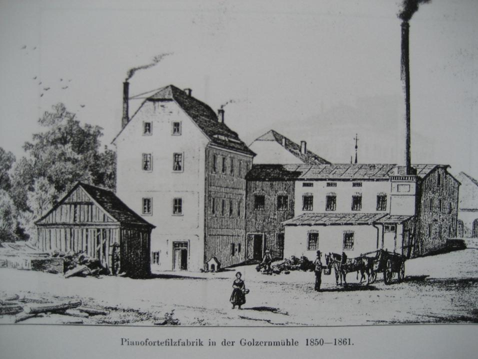
FFW Wurzen – Weickert-Filz in der Gegenwart
Die Filzfabrik Wurzen (FFW) wird heute von renommierten Filzmanufakturen aus Braunschweig (Deutschland) und Toronto (Kanada) geführt.
- Exklusive Renner-Partnerschaft: Renner bezieht seinen gesamten Premium-Deckfilz exklusiv aus der modernisierten Wurzener Manufaktur.
- Traditionsmeister: Das tiefe Wissen erfahrener Altmeister über Wollfeuchte, Walkzeiten und Faserrezepturen wird sorgfältig weitergegeben.
- Modernisierte Anlagen: Präzise Temperatur- und Drucküberwachung für unerreichte Chargenkonstanz.
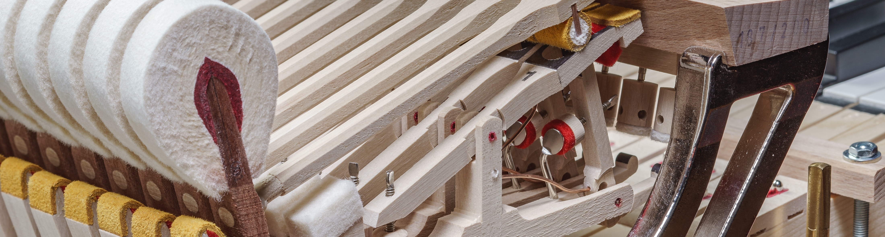
Reine Schurwolle: Schonung der Faserstruktur
- Ballenlieferung ohne Überpressung: Die Rohwolle wird in locker gepackten Ballen transportiert. Zu starkes Verpressen würde die empfindlichen Schuppen und Biegungen der Wollfasern irreversibel schädigen.
- Höhere Logistikkosten für Spitzenqualität: Dieser schonende Transport erhöht das Transportvolumen, sichert jedoch die unversehrte Faserelastizität.
- Starke Faserkräuselung: Nur hochgradig gekräuselte Merinowollfasern bieten beim späteren Walkprozess den optimalen Verhakungseffekt.
- Schonende Carbonisierung: Chemisch sanftes Reinigungsverfahren entfernt Pflanzenteilchen, ohne die Proteinstruktur des Keratins anzugreifen.
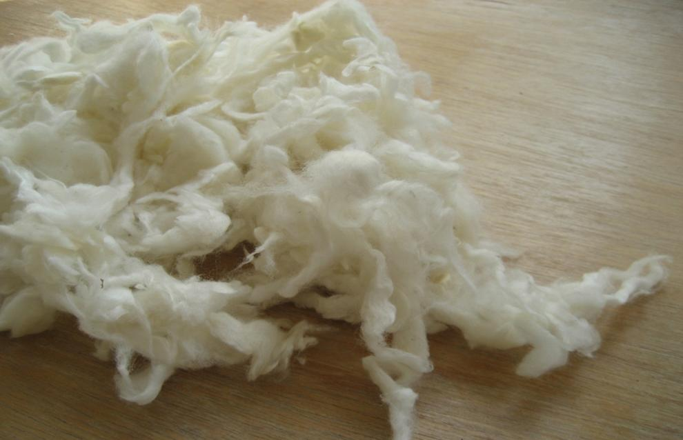
Die geheime Rezeptur der Wollmischung
Die Zusammensetzung und Aufbereitung der Wollfasern für Renner-Hammerköpfe ist ein streng gehütetes Manufakturgeheimnis zwischen der Filzfabrik Wurzen und Louis Renner.
- Blend-Verfahren: Mischen unterschiedlicher Faserlängen und -stärken, um spezifische Federsteifigkeiten zu erzielen.
- Faserauflockerung: Mehrstufiges maschinelles Zupfen und Belüften trennt Faserknäuel sanft in Einzelfasern.
- Klimakonditionierung: Konstante Feuchteaufnahme vor dem Kardieren verhindert elektrostatische Aufladung und Faserbruch.
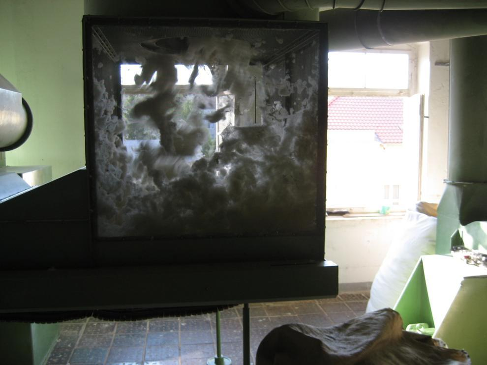
Krempeln: Parallele Ausrichtung zu weichen Vliesen
- Kardieren (Carding): Die aufgelockerten Fasern werden über feine Nadelwalzen gekämmt, entwirrt und parallel zueinander angeordnet.
- Definierte Faserrichtung: Das so entstehende hauchdünne, weiche Vlies besitzt eine exakt vorgegebene Vorzugsrichtung der Fasern.
- Schichtung: Mehrere Vlieslagen werden im Kreuz- und Längsverbund übereinandergelegt, um die gewünschte Plattendicke und Dichteverteilung aufzubauen.
- Voraussetzung für die Intonation: Nur parallel geordnete Fasern reagieren bei späteren Intonierarbeiten vorhersehbar und gleichmäßig auf Nadelstiche.
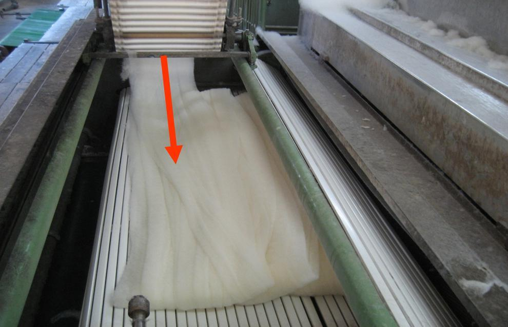
Die 4 Säulen des Walkens: Dampf, Druck, Bewegung & Wissen
Echter Hammerkopffilz entsteht ohne Bindemittel oder Klebstoffe. Das Verfilzen beruht rein auf den natürlichen Schuppen der Wollhaare.
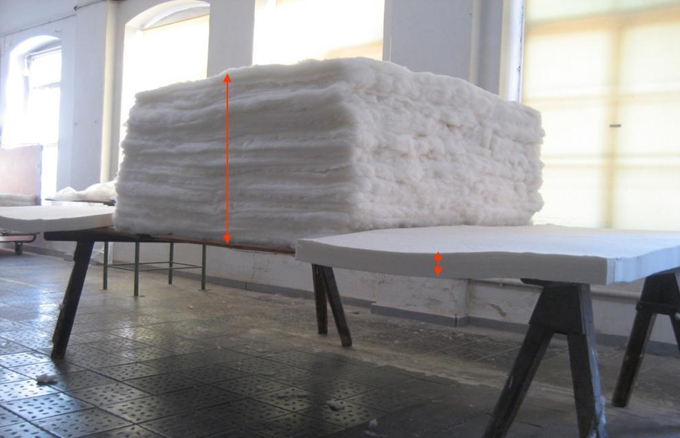
0.56 Shore: Die Grenze der natürlichen Walkhärte

Verdichten mit Filzhämmern & Filzsteinen
Die Nachbearbeitung gewalkter Platten entscheidet über deren Langzeitstabilität:
- Mechanisches Nachschlagen: Spezielle Filzhämmer und polierte Natursteine verdichten die Platten auf die exakten Sollmaße.
- Verzicht auf Schleifen: Wird Filz geschliffen, werden Abermillionen Fasern gekappt. Das Weickert-Verfahren verzichtet vollständig auf Schleifen.
- Glatter Biegeradius: Beim Biegen um den Holzkern bleibt die Oberfläche vollkommen geschlossen und glatt ohne aufplatzende Risse.
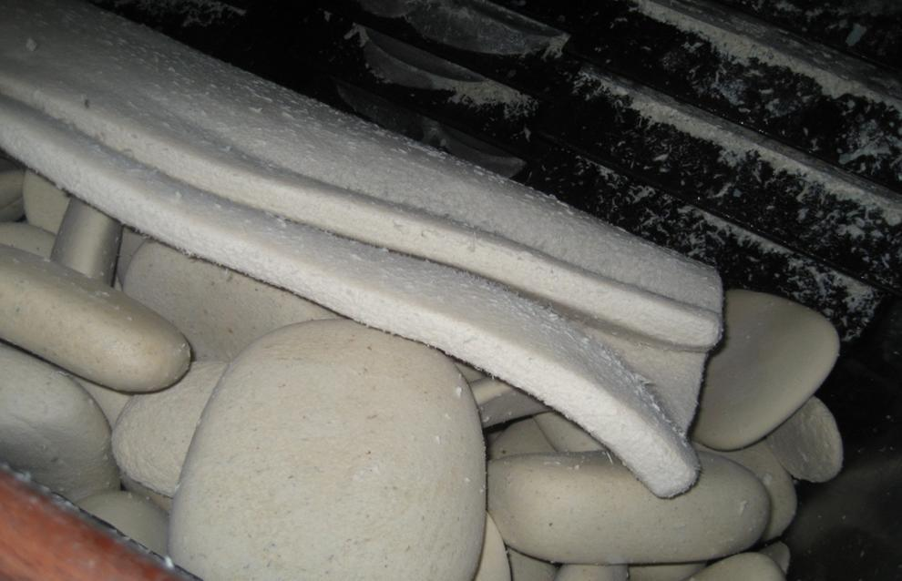
Über 30 Plattensorten im klimatisierten Lager
- Konische Plattenform: Die Filzplatten sind werkseitig keilförmig aufgebaut – dicker und schwerer im Bass, stetig dünner und dichter werdend zum Diskant hin.
- Über 30 Rezepturen auf Lager: Renner hält permanent weit über 30 verschiedene Filzplattensorten von FFW Wurzen vorrätig – mehr als jeder andere Hersteller weltweit.
- Klimakontrolle & Mottenschutz: Kontrollierte Luftfeuchte und Pheromonfallen schützen das Naturmaterial dauerhaft.
- Spannungsfreies Reifen: Mindestlagerdauer vor dem Zuschnitt baut innere Restspannungen vollständig ab.
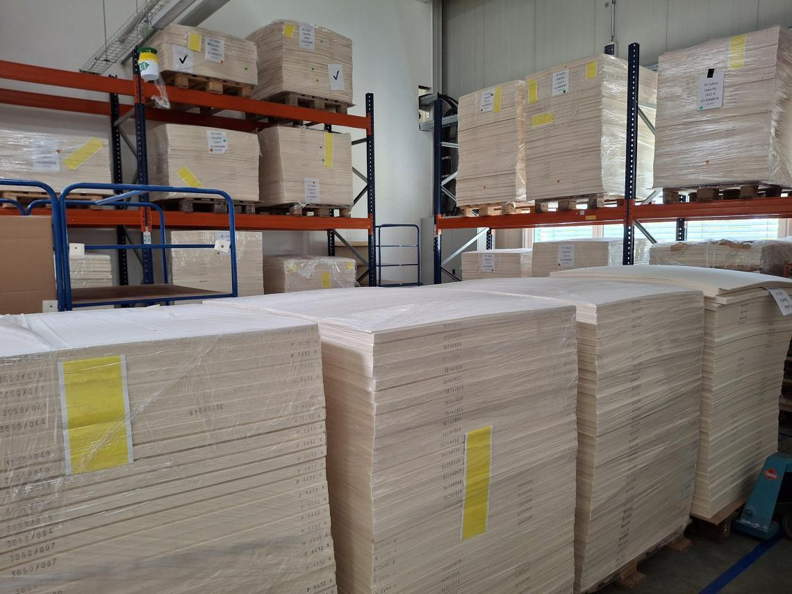
Die „Seele“: Das Markenzeichen der Wurzener Filze
Beim Blick auf originale Renner-Hammerköpfe im Bass fällt oft ein feiner farbiger Streifen im Inneren des Filzes auf.
- Was ist die „Seele“? Eine dünne, andersfarbige Filzschicht, die bei der Plattenherstellung am Bassanfang eingearbeitet wird.
- Traditioneller Herkunftsnachweis: Ein historisches Echtheitsmerkmal der Filzfabrik Wurzen für Klavierbauer weltweit.
- Kein Qualitätsunterschied: Platten mit 1 oder 2 Seelen besitzen identische Fasereigenschaften – sie dienen der Chargenkennzeichnung und optischen Authentizität.
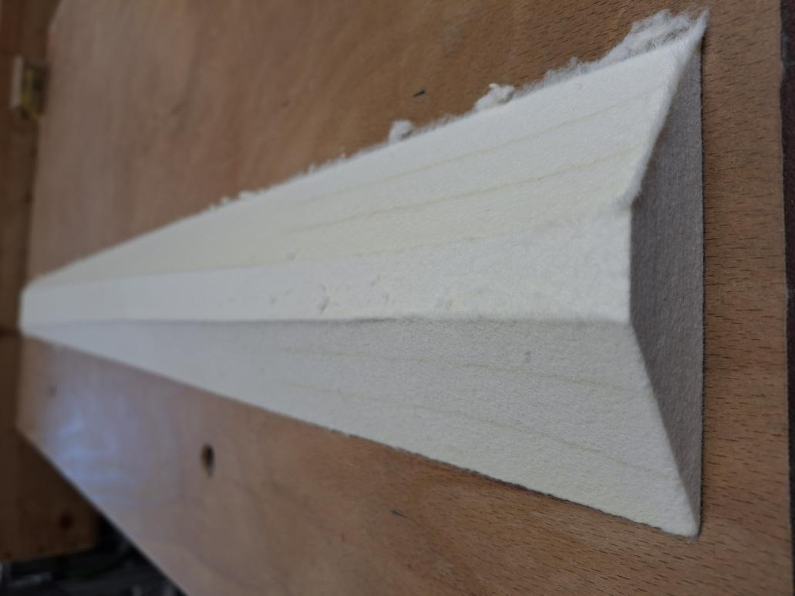
„Weickert Special“: Nur für Louis Renner
- Exklusivrezeptur: Wird von der Filzfabrik Wurzen ausschließlich für Renner gefertigt.
- Höherer Wollfettgehalt (Lanolin): Spezieller Waschprozess belässt mehr natürliches Lanolin in der Faser.
- Reduziertes Quellverhalten: Deutlich unempfindlicher gegenüber jahreszeitlichen Luftfeuchteschwankungen.
- Verbesserte Traktionskräfte: Außergewöhnliche Adhäsion und Eigenspannung am Holzkern.
- Dauerhafte Intonationshaltung: Der einmal intonierte Klangcharakter bleibt über Jahre stabil.
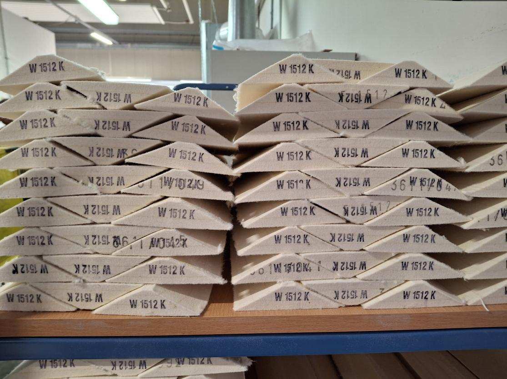
Robotischer Filzzuschnitt: Höchste Schnittpräzision
- Präzisions-Robotik: 6-Achs-Roboter führt das Spezial-Schneidmesser mit gleichbleibender Geschwindigkeit und Schnittdruck.
- Gleichmäßige Streifen: Exakt parallele Kanten ohne Quetschungen oder thermische Faserverglasung.
- Automatische Signierung: Jeder geschnittene Streifen wird sofort mit internen Fertigungs- und Chargendaten codiert.
- Industrie 4.0 im Klavierbau: Digitale Rückverfolgbarkeit vom Wollballen bis zum fertigen Konzertflügel.
Kantenqualität & Faserintegrität des Deckfilzes
Nach dem Roboterschnitt wird jeder Streifen einer optischen Prüfung unterzogen.
- Konische Geometrie: Gleichmäßige Keilform von Note 1 bis Note 88 ohne Maßabweichungen.
- Saubere Schnittkanten: Keine abstehenden Faserbündel, keine Fransen – glatte Seitenwände für den Leimauftrag.
- Vermeidung von Schiefzug: Nur exakt rechtwinklig geschnittene Streifen legen sich beim Pressen absolut symmetrisch um das Kernholz.
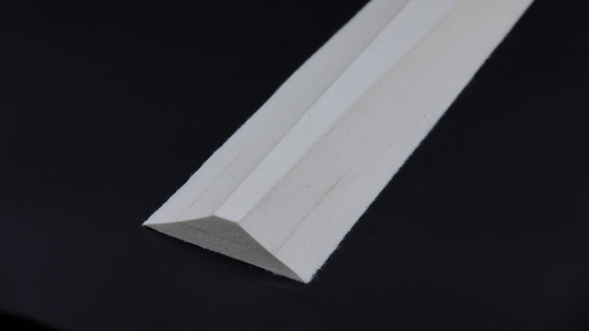
Unterfilz-Profilierung: Geometrie vor dem Verpressen
- Funktion des Unterfilzes: Der Unterfilz dient als elastischer Puffer zwischen dem harten Holzkern und dem weicheren Deckfilz.
- Präzisions-Profilierung: In Meuselwitz wird der Unterfilzstreifen vor dem Verleimen auf Spezial-Fräsmaschinen exakt profiliert.
- Gleichmäßiger Druckverlauf: Die profilierte Kontur garantiert, dass der Pressdruck beim Schließen der Pressbacken gleichmäßig in die Flanken geleitet wird.
Das Renner Unterfilz-Farbsortiment
Der Unterfilz prägt nicht nur die Mechanik-Elastizität, sondern auch das unverwechselbare optische Gesicht traditionsreicher Instrumente.
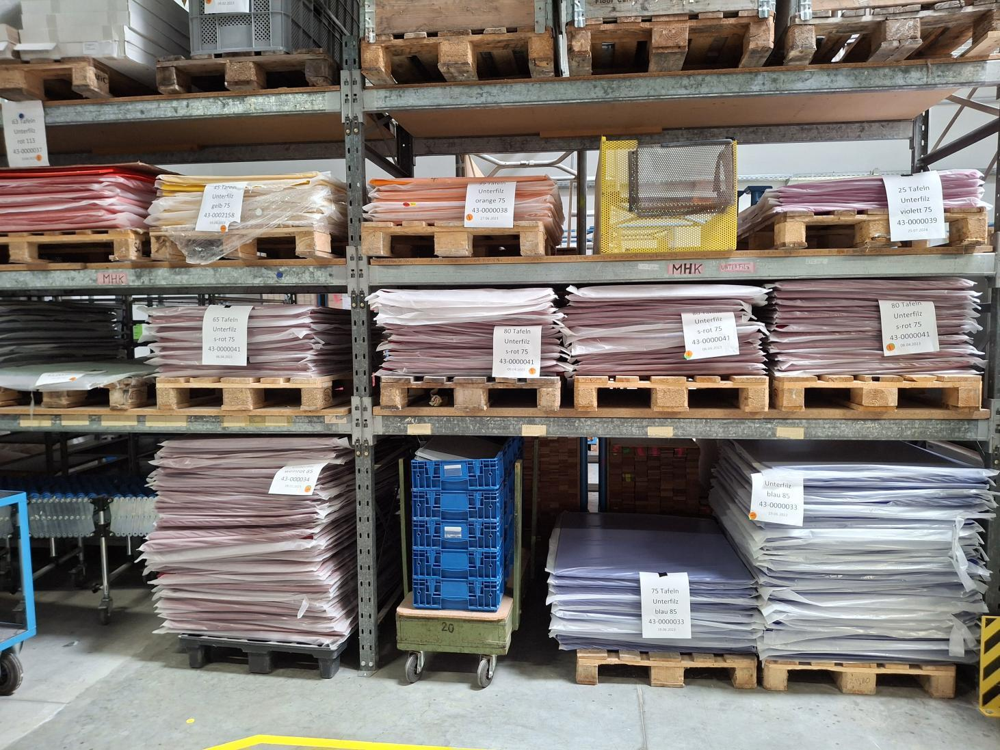
Kernholz-Arten & Spezifische Gewichte
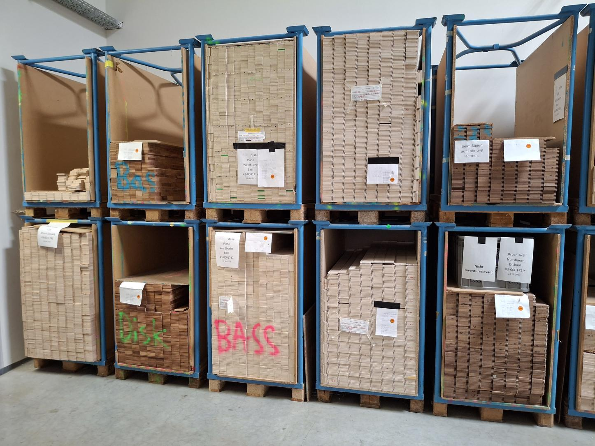
Kernholz-Formen: Symmetrisch & Asymmetrisch
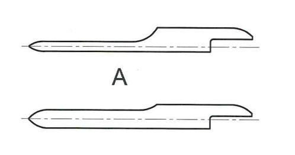
Vorformung des Bassfilzes & Biegekurven
- Elastische Vorbiegung: Das dicke Bass-Ende des Filzstreifens wird vor dem Einbringen in die Pressform vorkonditioniert.
- Charakteristische Kurven: Entlang des Streifens bilden sich harmonische Wellen, die den späteren Druckfluss abbilden.
- Gleichmäßige Dehnung: Verhindert das Reißen äußerer Faserlagen beim engen Umschließen der Kernholzspitze.
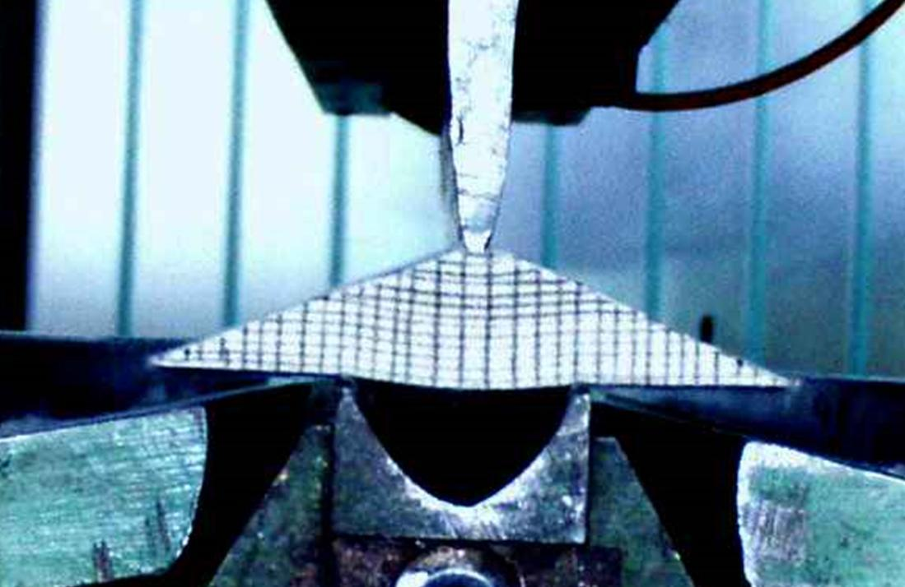
Pressen & Verleimen: Zug- und Druckkräfte im Filz
- Schließen der Seitenbacken: Die temperierten Pressbacken umschließen den Filz seitlich und führen ihn um das beleimte Kernholz.
- Kernholz nachspannen: Nachdem die Seitenbacken geschlossen sind, wird das Kernholz nochmals mit Hochdruck nachgespannt.
- Zugspannung in den Außenlagen: Durch diesen Renner-spezifischen Schritt erhalten die äußeren Filzlagen eine unerreichte Vorspannung.
- Basis für die spätere Intonation: Diese elastische Eigenspannung erlaubt späteres Intonieren mit unvergleichlicher Dynamikspreizung.
Der Hammerkopf-Riegel im Rohzustand
Nach dem kontrollierten Abkühlen und Abbinden des Leims wird der Hammerkopf als zusammenhängender Riegel entnommen.
- Perfekte Leimfuge: Vollflächige Verbindung zwischen Holz, Unterfilz und Deckfilz ohne Lufteinschlüsse.
- Harmonischer Übergang: Die Kernform zeichnet sich präzise unter dem komprimierten Filz ab.
- Betriebsgeheimnis der Formgebung: Bestimmte nachgelagerte Warmformschritte unterliegen dem strengen Renner-Verfahrensschutz.
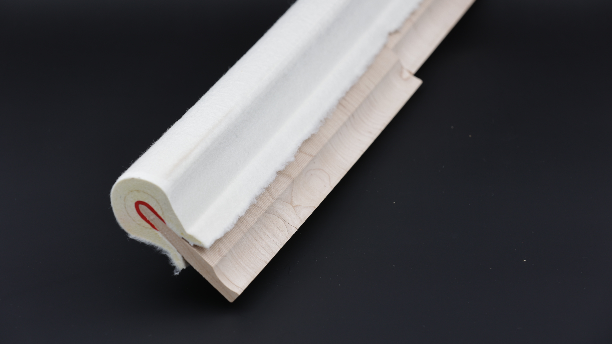
CNC-Bearbeitung & Abrichten des Riegels
- CNC-Abrichten der Leisten: Beseitigung von Leimaustritten und exaktes Ausfräsen der Außenradien.
- Hochgeschwindigkeits-Fräsen: Spezialwerkzeuge schneiden den dichten Wollfilz mit rasiermesserscharfen Kanten ohne Faserausriss.
- Präzises Auftrennen: Trennen des Riegels in exakt abgestimmte Breiten (Bass ca. 11,5 mm bis Diskant ca. 9,5–10 mm).
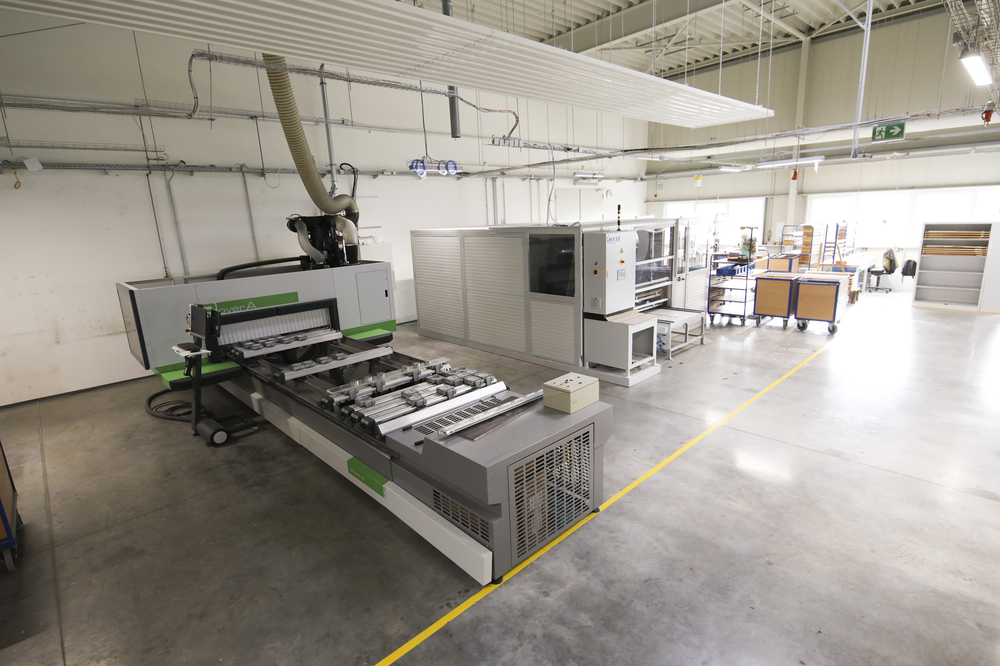
Bohrung, T-Vernietung & Veredelung
- Automatisierte Stielbohrung: Bohren im exakten Raumwinkel (Bohrungslänge, Durchmesser ø 5,4 mm, Neigungswinkel in Gon).
- T-Vernietung (Riveting): Hochfeste Messing-T-Nieten sichern die Filzschenkel dauerhaft gegen Aufplatzen bei stärksten Konzertanschlägen.
- Verrundung der Hammerschwänze: Speziell geformte Radien am Schwanz erleichtern später das Einpassen in den Fänger.
Die 6 Kernvorteile der neuen Renner-Hammerköpfe
Der Renner Musterteilekoffer (MTK)
Bei der Reparatur historischer oder moderner Flügel und Klaviere stehen Klavierbauer oft vor unbekannten Mechanikgeometrien. Der Renner Musterteilekoffer liefert für jede Aufgabenstellung das exakt passende Original-Musterteil.
- Direkte Passprüfung: Musterteile können direkt im Kundeninstrument eingehängt und getestet werden.
- Umfassendes Fachhandbuch: Ausführliche Tabellen mit Hebellängen, Winkeln und Kapselabständen.
- Vermeidung von Fehlbestellungen: Eindeutige Renner-Artikelnummern für reibungslose Nachbestellung.
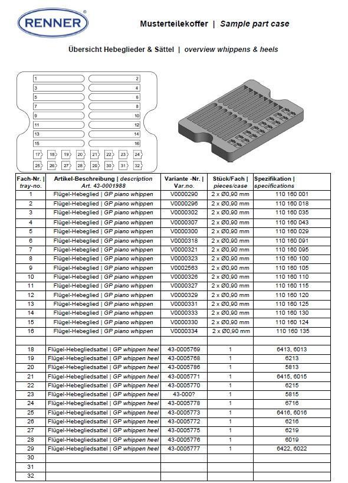
15 Flügel-Hebeglieder & 12 Wechselsättel
- 15 verschiedene Hebeglied-Varianten: Jeweils 2 Stück pro Modell als Testmuster im Koffer enthalten.
- 2 Modelle ohne Sattel: Ermöglichen individuelle Anpassungen bei historischen Sonderkonstruktionen.
- 12 kombinierbare Sättel: Unterschiedliche Sattelhöhen und Neigungen zur Feinabstimmung der Steighöhe.
- Sofortige Lieferbarkeit: Alle 15 Hebeglied-Typen sind bei Renner ab Lager als kompletter Reparatursatz verfügbar.
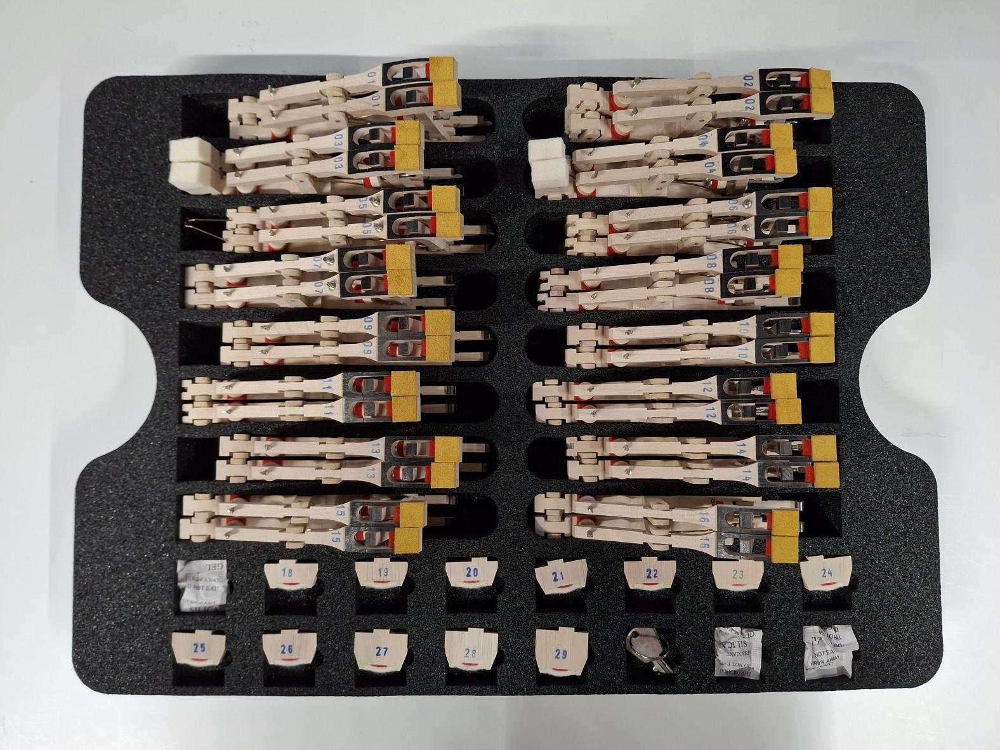
Mechanik-Kapseln, Dämpferarme & Leisten
- 15 Flügel-Kapseln: Unterschiedlichste Befestigungsbohrungen, Drop-Schrauben-Positionen und Achshöhen.
- 10 Klavier-Kapseln: Für Hebeglieder und Dämpferarme moderner und älterer Klaviere.
- Dämpferarme (US & Renner): Spezifische Kröpfungen und Längen für beide Normwelten.
- Klinken & Mechanikleisten: Musterprofile aller originalen Renner-Messing- und Aluminiumleisten.
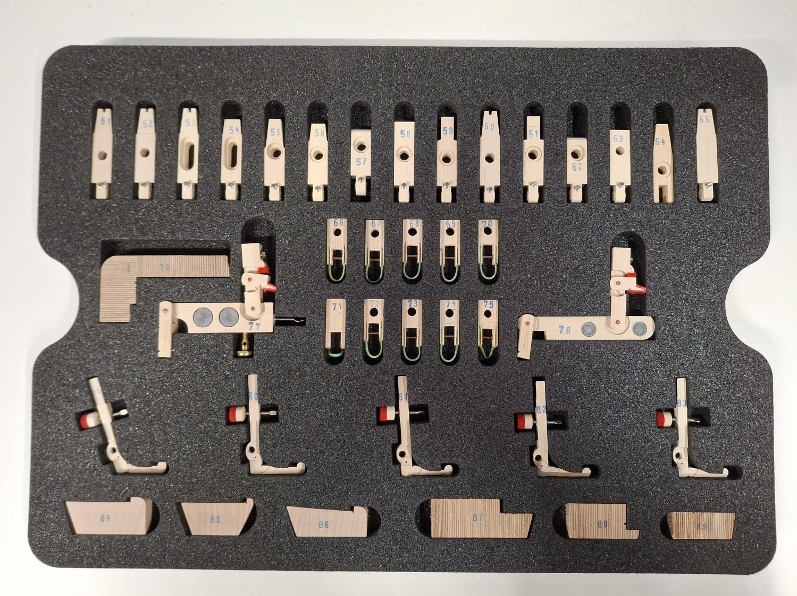
Klavier-Mechanikteile für AP- & APK-Systeme
- Bass- & Diskantdämpfer: Unterschiedliche Filzkeile und Einzelfilze für stehende Klaviere.
- Dämpferarme für AP & APK: Passgenaue Geometrien für Renner Standard-Klaviermechaniken.
- Hebeglieder mit Verlängerungsabstrakten: Für ältere Bauformen mit tiefer liegendem Klaviaturtisch.
- Hammernüsse: Diverse Ausführungen mit Kapsel und Rückholfeder.
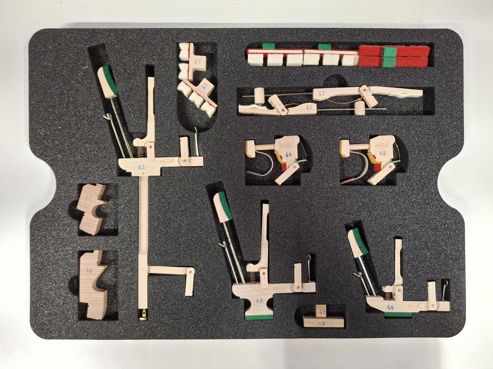
16 Flügel-Hammerstiele mit Kapseln
- 16 Standard-Hammerstiele mit Kapsel: Jeweils 2 Stück pro Modell als Testmuster im Koffer.
- 3 Stiele ohne Kapsel: Für Selbstreparaturen und das Einsetzen in Originalkapseln.
- Blüthner-Patentstiele: Originale Geometrien für historische Blüthner-Patentmechaniken.
- Wiener Mechanik & Klemmschläuche: Spezialteile zur fachgerechten Restauration historischer Wiener Flügel.

Die 16 Kapselvarianten für alle Flügelmodelle
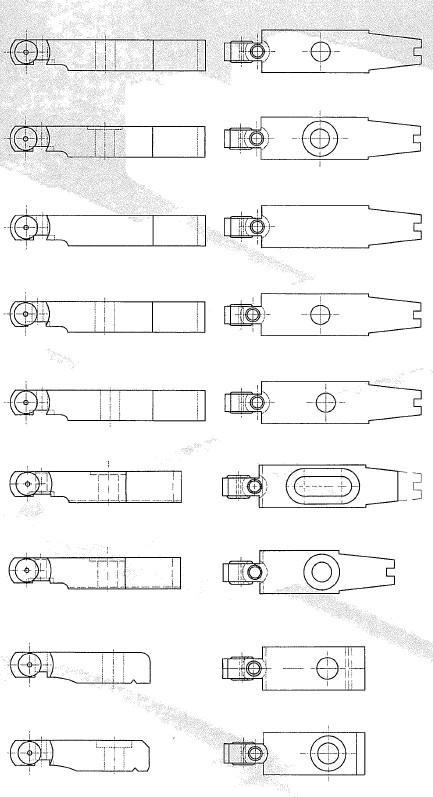
Röllchenabstand, Stielstärke & Satz-Zusammenstellung
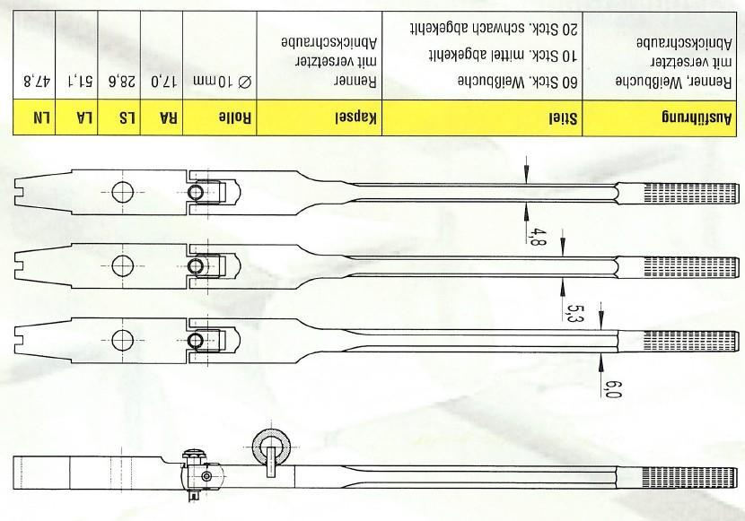
Automatisierte Montage & 5 Tage Reifung

Das Renner Hammerkopf-Maßblatt (Flügel & Klavier)
- Basisdaten des Instruments: Hersteller, Seriennummer, Modell, Baujahr (z. B. Steinway & Sons M 170 #535100 von 1996).
- Oft genügen Basisdaten: Bei renommierten Marken reichen diese Angaben bereits aus, damit Renner einen exakt passenden, gebohrten Satz liefert.
- Präzise Einzelmaße: Bei unbekannten oder modifizierten Flügeln werden Gesamtlänge, Bohrungslänge, Stärke und Winkel erfasst.
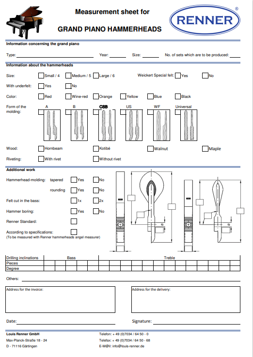
Werksspezifikationen für alle Weltmarken
Renner verfügt über das weltweit umfangreichste Archiv an Original-Bohrungsdaten für fast alle Qualitätsklaviere und -flügel:
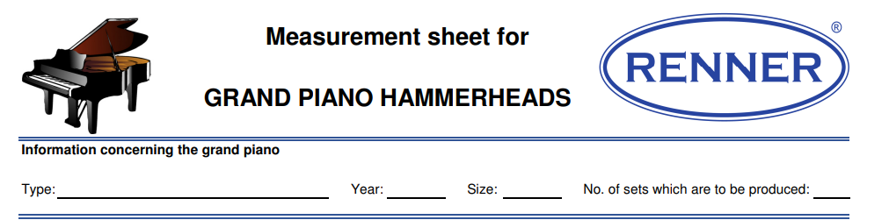
Bohrungslänge = Gesamtlänge - 24 mm
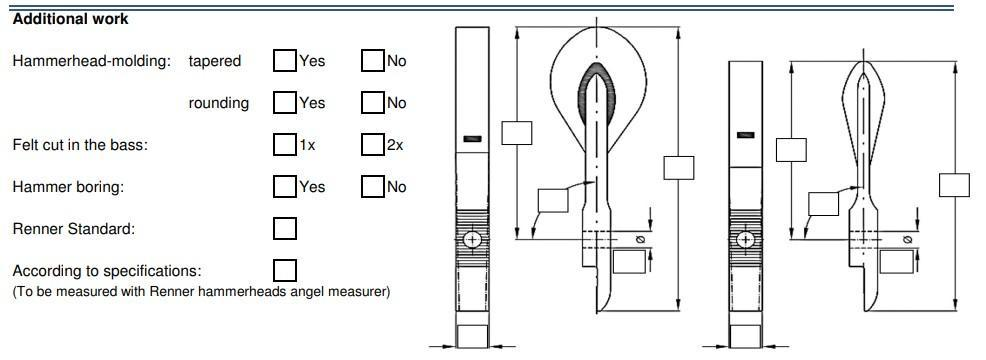
Bohrwinkel in Gon (100er-Teilung des 90°-Winkels)
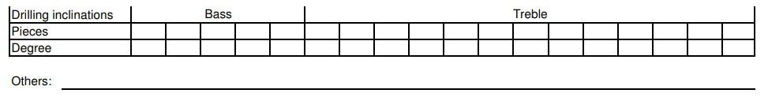
90°-Stielwinkel & 3 mm Überhang: Physik des Tons
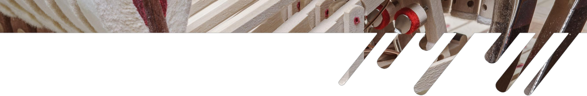
Berechnung der Bohrungslänge ohne Muster
- (1.) Abstand von der Saitenebene zum Klaviaturtisch messen.
- (2.) Abstand von der Hammerstielachse (Kapselmittelpunkt) zum Klaviaturtisch messen.
- = Differenz aus Wert (1.) minus Wert (2.) bilden.
- - (3.) 3 mm abziehen (für den Stielüberhang beim Saitenanschlag).
- = (4.) Exakte rechnerische Bohrungslänge!
Flügel- & Klavier-Maßblätter im Vergleich
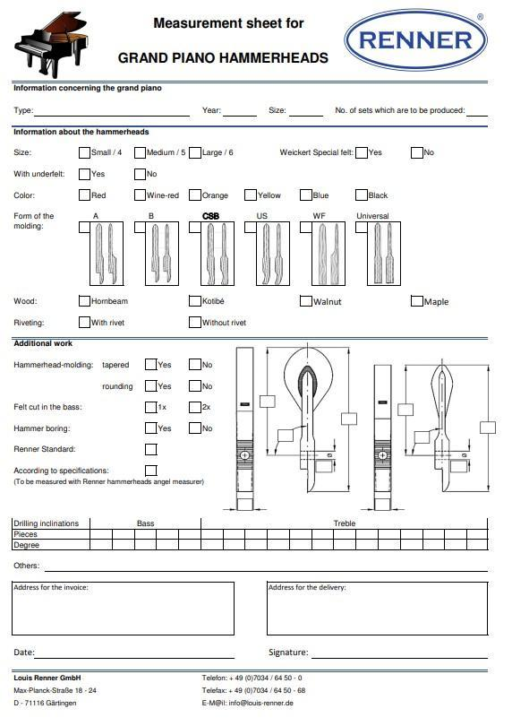
Vormontage der Hammerstiele & Spezialschrauben
- Vormontage in Feldern: Stiele nach Registerverteilung aufstecken; 1–2 Positionen zwischen Feldern frei lassen.
- Gewindegang finden: Bei gebrauchten Leisten Schraube zuerst leicht nach links drehen, bis sie spürbar in den alten Gewindegang einrastet.
- Renner Flanschschraube (Art. 43-0008745): 4,5x22 mm mit Tellerfeder-Scheibe und kombiniertem Schlitz/Kreuzschlitz.
- Werkzeuge: PZD 2 Ballengriff-Schraubendreher (Art. 43-0008316) und Kapselabstandhalter (Art. 43-0003286).
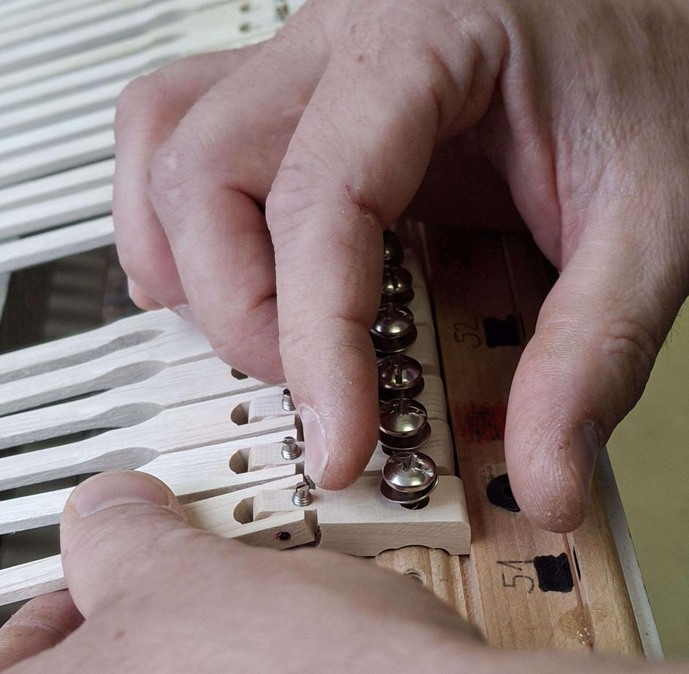
Frequenzprüfung & Akustische Sortierung
Bevor die Schrauben endgültig angezogen werden, erfolgt die akustische Frequenzkontrolle jedes einzelnen Hammerstiels:
- Klangprobe durch Antippen: Jeder Stiel wird sanft angeklopft und seine Eigenresonanz belauscht.
- Harmonischer Tonverlauf: Stiele mit tieferer Resonanzfrequenz gehören in den Bass, mittlere in die Mittellage, helle hohe Resonanzen in den Diskant.
- Homogenes Spielgefühl: Diese akustische Sortierung verhindert Klangausreißer und ungleiche Energieübertragung.
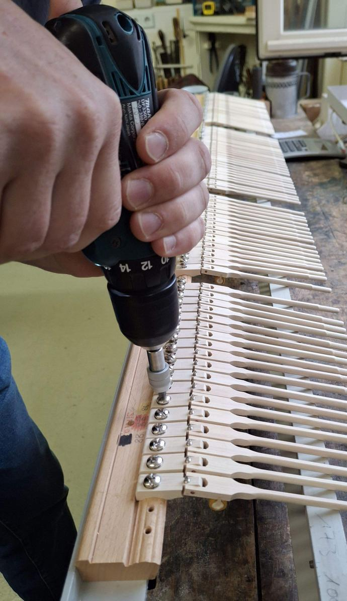
Traveling: Gerader Stiellauf mit blauem Papier
- 90°-Ausrichtung der Randstiele: Zuerst den ersten und letzten Stiel jedes Feldes rechtwinklig zur Leiste einrichten.
- Traveling-Korrektur: Schief laufende Kapseln werden mit blauem, 0,2 mm dickem Klebepapier (Art. 43-0005975) unterfüttert.
- Winkelfilzmesser (Art. 43-0003252): Ermöglicht das saubere Unterschieben und Schneiden der Papierstreifen unter der Kapselsohle.
- Feldverschiebung: Ganze Felder können bei älteren Flügeln gezielt nach links oder rechts korrigiert werden.
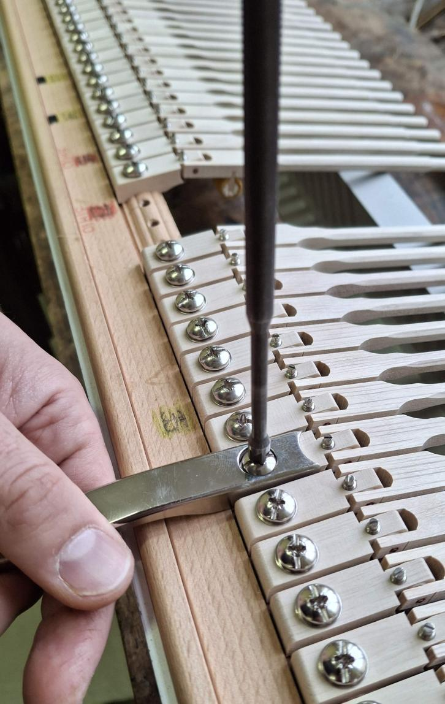
Zwingende Neunummerierung vor dem Verleimen
Jeder Renner-Hammerkopfsatz wird im Werk exakt gezählt, sortiert und ab Werk signiert. Dennoch gilt ein eiserner Grundsatz:
- Überzählige Hämmer aussortieren: Satz auf das Arbeitsbrett legen und Reservehämmer separieren.
- Gefahr des Nummernverlusts: Durch das Verjüngen der Hammerkerne (schmaler als Schnittbreite) werden Werkssignaturen oft weggeschliffen!
- Neunummerierung mit Bleistift: Alle 88 Hammerköpfe müssen vor dem Verleimen auf der Unterseite mit ihrer Tastennummer beschriftet werden.
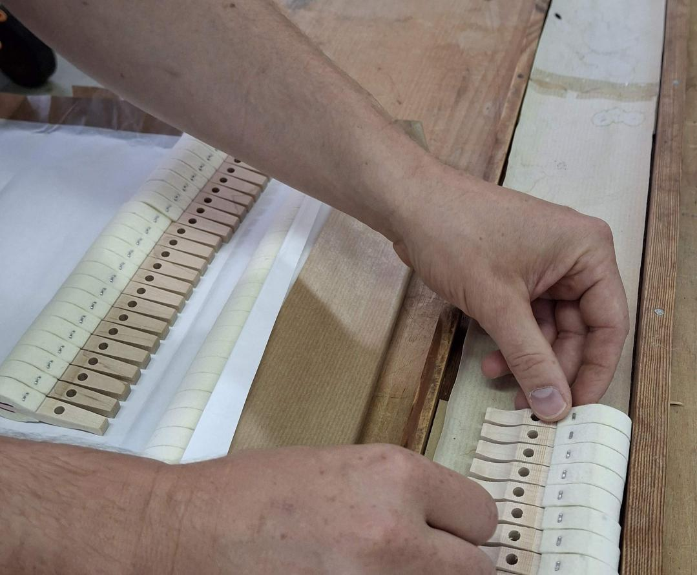
Musterhämmer & Handreibahle ø 5,0 mm (Konus 1:50)
- Referenzhämmer setzen: Zuerst den ersten und letzten Hammer jedes Teilfeldes als Orientierungsmuster aufstecken.
- Handreibahle (Art. 43-0003409): Reibahle ø 5,0 mm mit exaktem Konusmaß 1:50, Schneidrichtung stets im Uhrzeigersinn!
- Konisches Aufweiten: Die zylindrische Werksbohrung wird exakt auf die Konizität des Hammerstiels erweitert.
- Spannung kontrollieren: Der Hammer muss sich ohne Klebstoff bereits fest und wackelfrei aufreiben lassen.
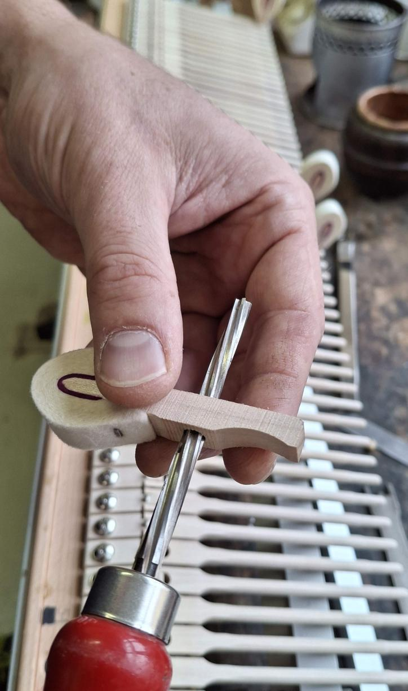
Konischer Stiel & Konische Bohrung: Die Physik
- Kein Leimabstreifen: Bei zylindrischen Stielen wird der Leim beim Aufschieben nach außen geschoben – die Leimfuge verhungert.
- Gleichmäßiger Leimfilm: Beim Konus berühren sich Holz und Bohrung erst auf den letzten Millimetern.
- Holzquellung als Keilverschluss: Durch das Wasser im Leim quillt das Holz in der Bohrung auf und arretiert den Stiel unlösbar.
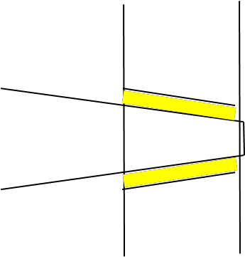
91°-Rake-Winkel mit der Winkellehre
- Flügel-Hammerkopfwinkel-Lehre (Art. 43-0005650): Speziell kalibrierte 91°-Lehre für die Flügelmechanik.
- Warum 91°? Die minimale 1°-Neigung gleicht die spätere Stieldurchbiegung unter Anschlagslast exakt aus.
- Kontrolle der Referenzhämmer: Erster und letzter Hammer jedes Feldes werden auf die 91°-Lehre justiert.
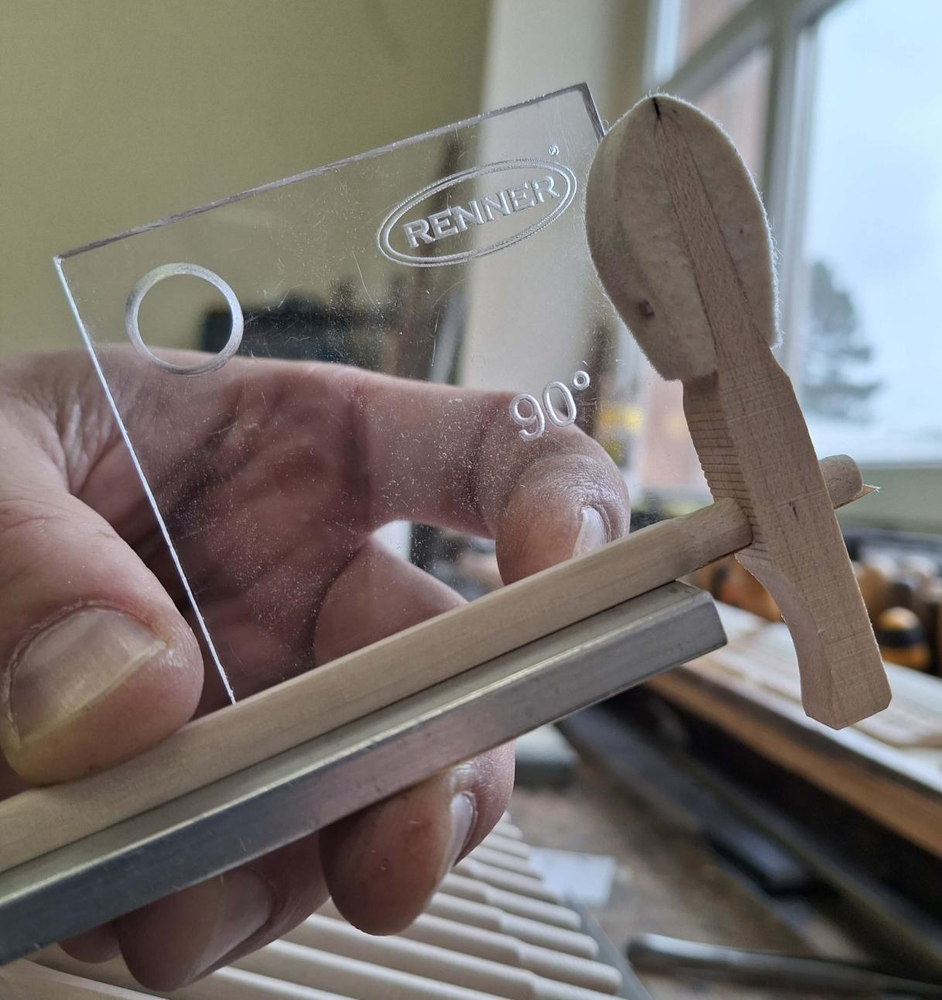
Heißer Knochenleim vs. Hartholz-PVA-Leim
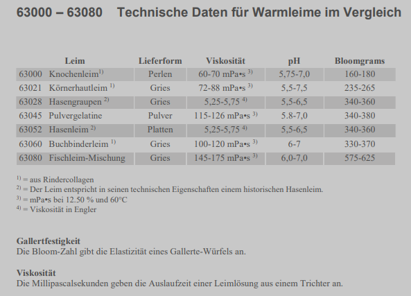
Drehverleimung für lückenlose Leimringe
- Doppelter Leimauftrag: Dünner Leimfilm auf den Stiel und tropffrei in die Bohrung.
- Rotierende Bewegung: Beim Aufschieben wird der Hammerkopf um ca. 90° hin und her gedreht -> garantiert einen geschlossenen Leimring.
- 3er-Gruppen-Prinzip: 3 Hämmer leimen und sofort den Durchgang des mittleren zur Referenzlinie peilen.
- Fluchtkontrolle: Fluchtlinie von Vorderfilz, Rückfilz und Hammerschwänzen mit dem Auge kontrollieren.
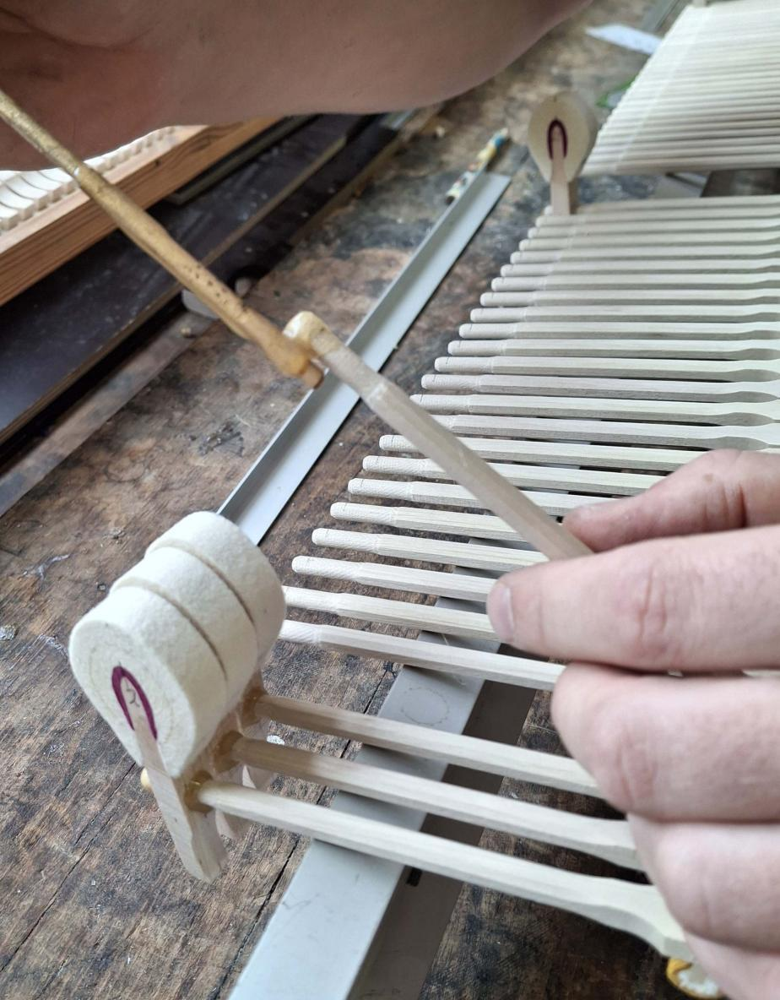
Leimfuge verputzen: Der Gummibärchen-Zustand
- Heißwasserpinsel: Direkt nach dem Aufsetzen wird die Fuge mit heißem Wasser (oder verdünntem „Leimwasser“ bei PVA) geglättet.
- 1 Stunde Reifezeit: Nach ca. 60 Minuten erreicht der austretende Leimring die Konsistenz von Weinflaschengummi („Gummibärchen“).
- Sauberes Abstechen: In diesem elastischen Zustand lässt sich der Ring mit einem scharfen Schnitzmesser rückstandslos abtrennen, ohne das Holz einzukerben.
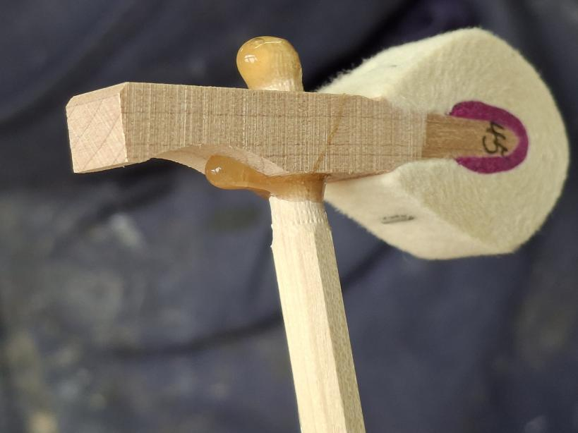
Klemmschere & Kappen mit der Japansäge
- Gefahr für die Kapselachse: Sägekräfte und Schleifdruck dürfen unter keinen Umständen auf die filigrane Kapselachse wirken!
- Klemmschere für Flügelstiele (Art. 43-0003233): Blockiert den Stiel direkt hinter dem Kopf und leitet alle Kräfte direkt in die Klemme ab.
- Schnitt mit der Japansäge: Feinzahnige Japansäge trennt den überstehenden Stielzapfen bündig am Holzkern ab.
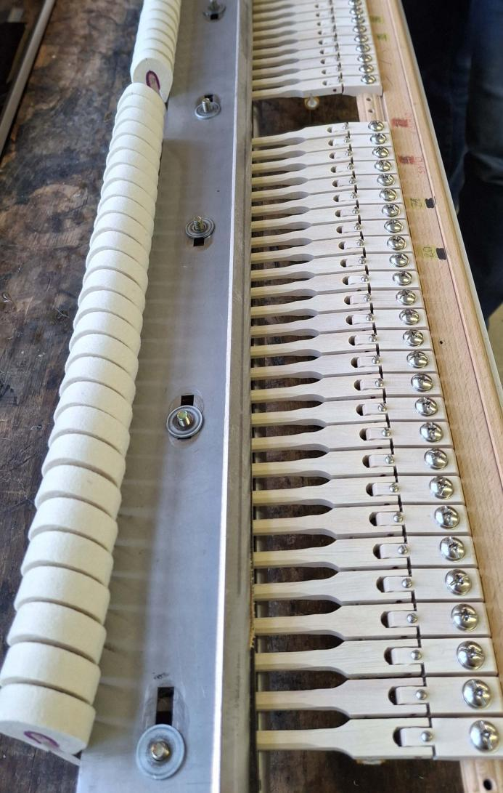
Schwanzformung: Weder zu rund noch zu flach
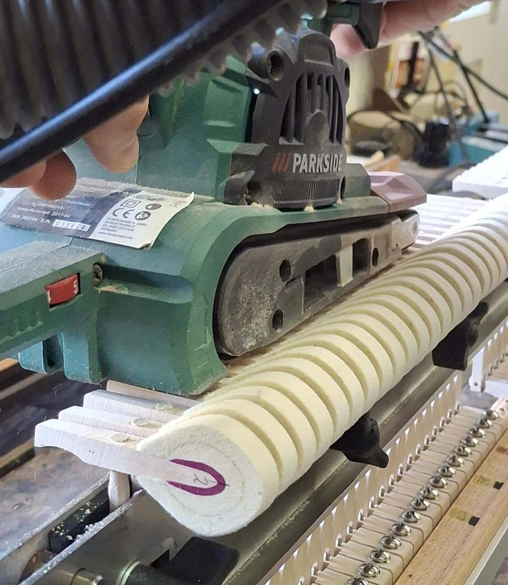
Kantenbrechen & Flammenkorrektur der Flucht
- Kanten brechen: Scharfe Holzkanten an den Schwanzseiten werden mit feiner Schleiffeile sanft verbrochen.
- Flammenkorrektur an der Brennerlampe: Kleinste Flucht- oder Neigungsfehler werden durch gezielte, sanfte Erwärmung des Stiels korrigiert.
- Einbaufertiger Zustand: Der Satz ist nun mechanisch perfekt montiert, gefluchtet und bereit für die Regulierung im Instrument.
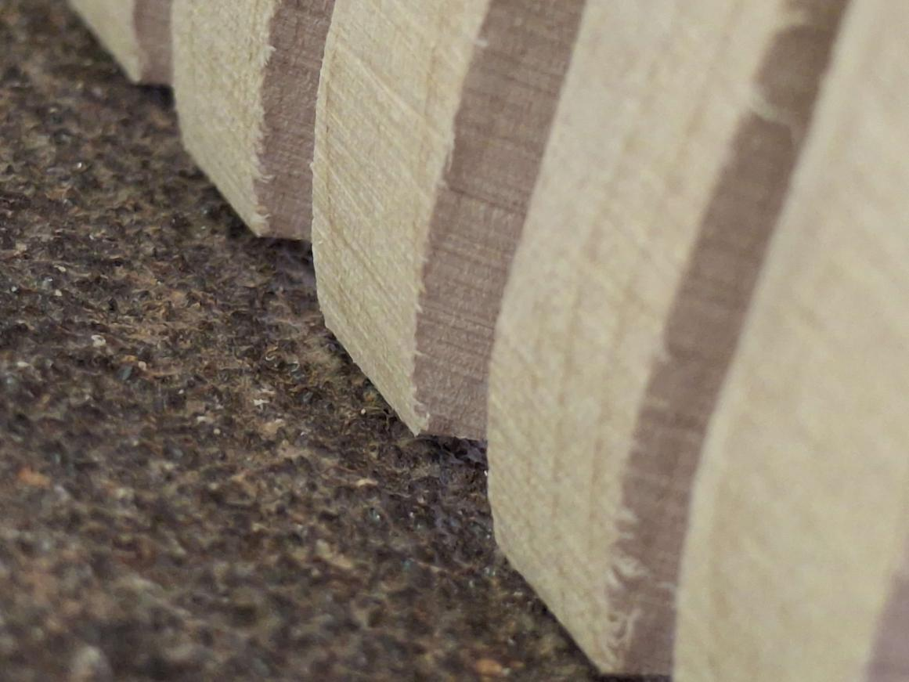
Die Philosophie der Renner Intonation
- 1. Volle Klangschönheit: Die klanglichen Eigenheiten des spezifischen Flügels auf das höchste Niveau bringen.
- 2. Maximale Dynamikstufen: Alle Töne müssen so viele dynamische Abstufungen wie möglich bieten – von pp bis ff.
- 3. Breites Teilspektrum: Reicher Obertongehalt für tragfähigen Ton („Sustain“) im Raum.

Herausforderungen: Unveränderlich vs. Beeinflussbar
- Konstruktion: Mensur, Gussplatte, Resonanzbodenholz
- Raumakustik: Großer Saal, Studio, Wohnraum, Schule
- Pianist: Individueller Anschlag und Geschmack
- Renner Hammerköpfe & Filze: Perfekte Basis
- Renner Mechanikteile: Präzise Hebelwege
- Saitenlagerung: Fester Sitz an Stegen und Stiften
- Feinregulierung & Stimmung: Perfektes Fundament

Keine Intonation ohne makellose Regulierung!
und ohne gute Regulierung keine saubere Intonation,
und ohne saubere Stimmung keine saubere Intonation.
Eines führt zum anderen, und alles ist mit allem verbunden!“
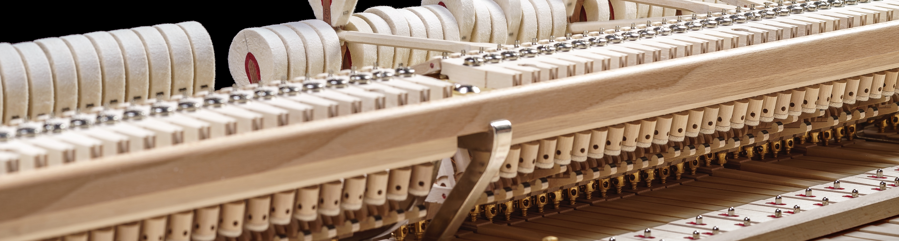
Das Uhren-Modell: Die 4 dynamischen Keile

Vorintonation (Pre-Needling): Tiefe Stiche im ff-Keil
Die Vorintonation ist der wichtigste Basisschritt bei fabrikneuen oder neu befilzten Hämmern:
- Arbeitszone: Ausschließlich im blauen Fortissimo-Keil (Bereiche 9:00–10:00 Uhr und 2:00–3:00 Uhr).
- Tiefe Einstiche: Nadeln tief bis kurz vor den Unterfilz einstechen (niemals in Unterfilz oder Holzkern stechen!).
- Spannungstransfer: Der Kopf verliert die harte Werkssteife; elastische Spannungsenergie fließt in den grünen Forte-Keil ab.
- Empfehlung: Dieser Schritt ist vor dem ersten Anspielen im Instrument fast ausnahmslos anzuraten.
Nadelstich-Vorgaben & Intonierwerkzeuge
- Stichanzahlen Pre-Needling:
• Bass: 7–10 Stiche horizontal
• Mittellage: 5–10 Stiche horizontal
• Diskant: 0–7 Stiche vertikal - Drücken, niemals hacken! Nadeln ruhig und mit Körpergewicht eindrücken. Hacken zerreißt die Wollfasern unkontrolliert!
- Original Renner Werkzeuge:
• Intonierapparat verstellbar (Art. 43-0005642)
• 3er-Intonierer Profi-Typ (Art. 43-0003270)
• Nadeln Nr. 7 vernickelt ø 0,60 mm, 9 mm lang (Art. 43-0003426).
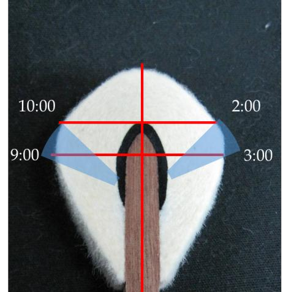
Saitenvorbereitung: Anhangstifte, Stegstifte & Agraffen
- Anhangstifte setzen: Saiten von hinten nach vorn am Anhangstift mit Messingdurchschlag und leichtem Hammer vorsichtig niederschlagen.
- Stegstifte setzen: Saite am Steg zuerst am hinteren, dann am vorderen Stift sanft nach unten treiben (Vorsicht: Saite darf sich nicht ins Stegholz eingraben!).
- Nivellieren in den Agraffen: Bei voller Konzertstimmung (440 Hz+) Saitenchöre mit dem Haken auf exakt gleiche Höhe anheben.
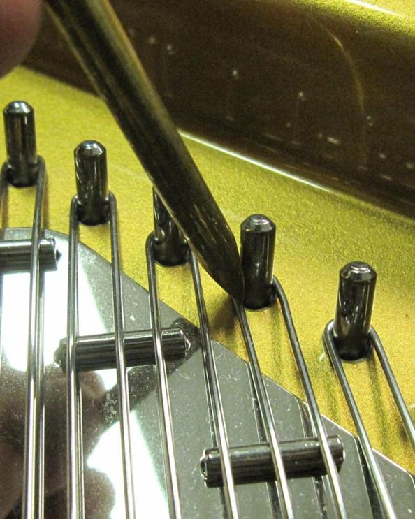
Anschlagspunkt im Diskant & Geradheitsprüfung
- Anschlagspunkt Note 88 prüfen: Klaviaturrahmen minimal vor- und zurückschieben, um die hellste, tragfähigste Klangstelle im Diskant zu finden.
- Noten 69 bis 88 anpassen: Der Diskant vieler Flügel lässt sich durch eine Neujustierung des Anschlagspunkts dramatisch verbessern!
- Geradheit aller Köpfe: Prüfung durch leichtes Anzupfen mit Haken oder Heben der Klinke mit dem Finger; Markierung mit Kreide auf der Taste.
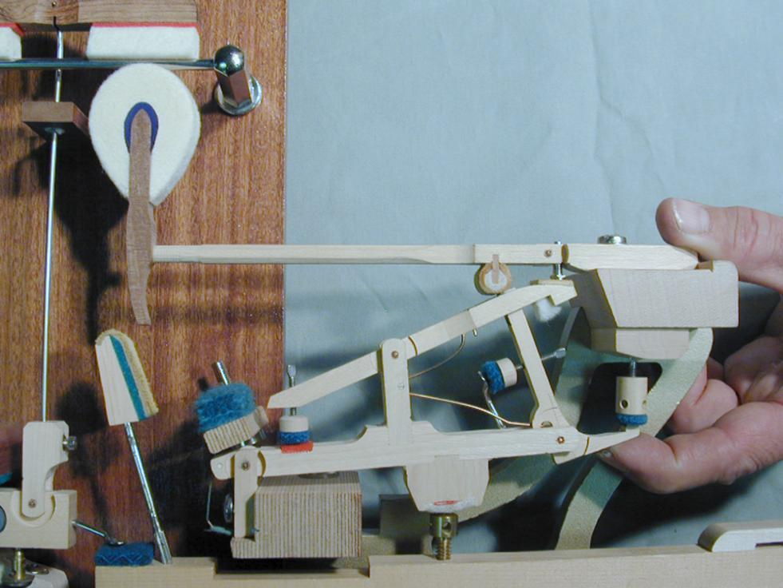
Abziehen der Hammerkrone: Hohl vs. Plan vs. Schief
Durch das Traveling und ungleichmäßige Saitenchöre muss die Oberfläche der Hammerkrone feinst abgezogen werden:

Zwischen- & Feinintonation: Die 2-mm-Kronenstiche
- Chromatisches Durchspielen: Tastatur auf- und abwärts chromatisch anschlagen; Noten mit abweichender Härte oder Lautstärke lokalisieren.
- Zwischenintonation (Mid-Voicing): Sanftes Nadeln im grünen Forte- und orangenen Piano-Keil. Zu weiche Töne werden durch feines Nachschleifen gehärtet!
- Feinintonation (Final Balance): Kurze Einzelnadel (BDK-Halter Art. 43-0003269 oder Chop Stick Art. 43-0003271).
- Stichtiefe max. 2 mm an der Krone: Ausschließlich zwischen den Saitenabdrücken einstechen, niemals direkt in den Rillen!